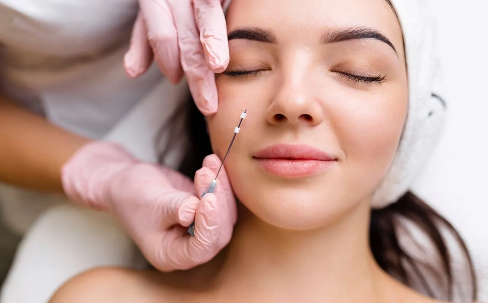
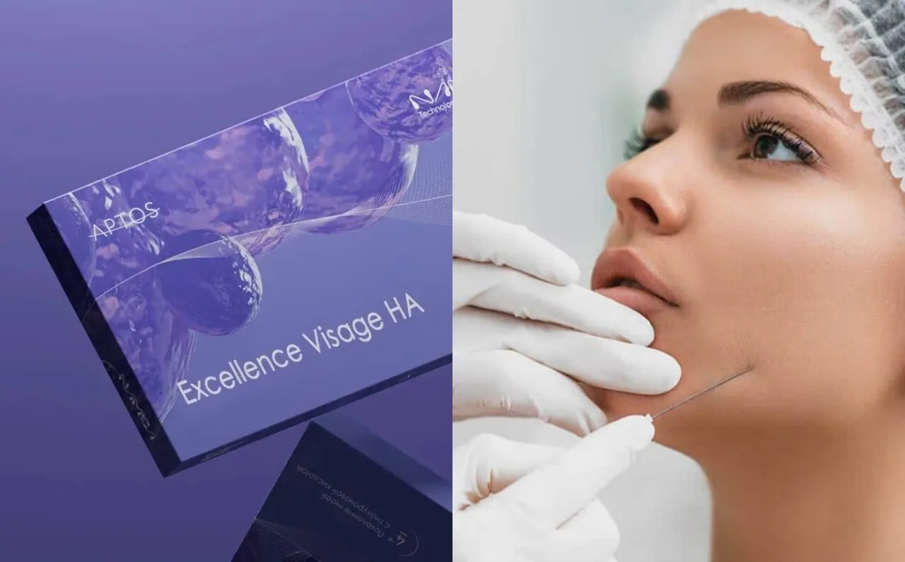
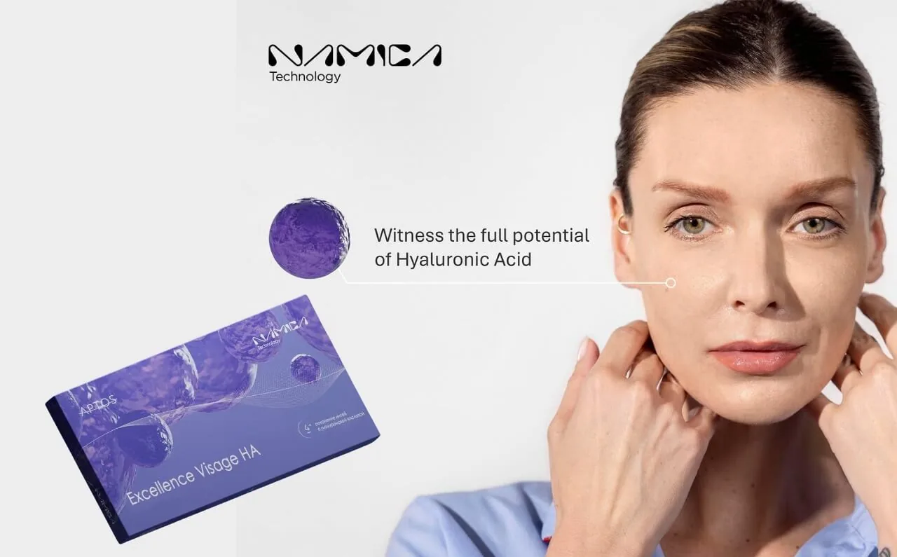
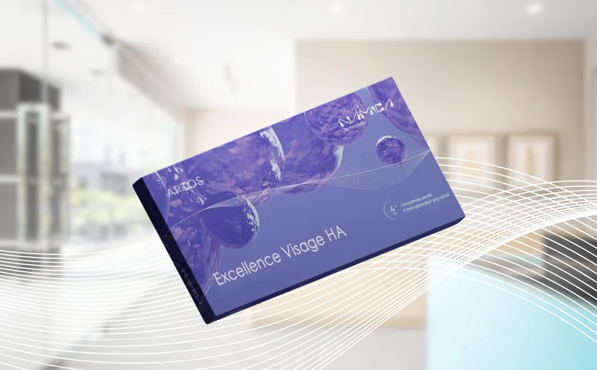

When it comes to achieving a more youthful and refreshed appearance, many individuals consider facial rejuvenation procedures. With advances in aesthetic treatments, there are now various options available to help you restore your natural beauty. Among these, Aptos Thread Lifting has emerged as a popular alternative to traditional facelift surgery.
Aptos Thread Lifting offers a minimally invasive solution for those seeking a subtle lift without the need for extensive surgery. On the other hand, traditional facelifts are still a go-to option for those looking for more dramatic and long-lasting results. The challenge, however, is deciding which method is the best fit for your needs.
In this blog, we’ll compare Aptos Thread Lifting with traditional facelifts, exploring the key differences in procedure, recovery time, results, and potential risks.
What Is Aptos Thread Lifting?

Aptos Thread Lifting with NAMICA Technology offers a non-invasive solution for lifting and tightening the skin, rejuvenating your appearance with natural results. Discover how this advanced treatment can enhance your facial features without surgery.
Aptos Thread Lifting is a minimally invasive aesthetic treatment designed to lift and tighten the skin without the need for surgery. Using specially developed biocompatible threads, the procedure provides a subtle yet effective facelift-like result by stimulating collagen production and lifting sagging areas of the face.
During the treatment, the Aptos threads are strategically inserted beneath the skin using fine needles. These threads are equipped with small barbs that grip and lift the underlying tissue, creating an immediate lifting effect. The threads also encourage the body’s natural healing response, stimulating the production of collagen and elastin, which gradually improves skin texture and tightness over time.
One of the key benefits of Aptos Thread Lifting is that it offers a natural-looking, more youthful appearance without the need for extensive surgery. The procedure is typically performed under local anaesthesia, making it a quick and comfortable treatment for those looking to enhance their facial contours with minimal disruption to their daily lives.
Aptos Thread Lifting is suitable for individuals who are experiencing mild to moderate sagging or skin laxity, particularly around the lower face, jawline, and neck. It’s an ideal option for those who want noticeable yet subtle results and prefer a faster recovery time compared to traditional facelifts.
This treatment not only provides an immediate lift but also improves skin quality over time, giving you a rejuvenated look that enhances your natural beauty.
What Is a Traditional Facelift?

A traditional facelift is a popular procedure designed to restore a youthful appearance by lifting and tightening the skin. It offers long-lasting results for those looking to reduce sagging and wrinkles.
A traditional facelift, also known as a rhytidectomy, is a surgical procedure designed to address significant signs of ageing, such as deep wrinkles, sagging skin, and a loss of facial volume. This procedure involves the removal of excess skin and the tightening of underlying tissues, providing a more youthful, smoother appearance that can last for years.
During a traditional facelift, the surgeon makes incisions along the hairline, around the ears, and sometimes under the chin, to access the deeper layers of the face. Once the tissues are repositioned, any excess skin is trimmed away, and the remaining skin is tightened and sutured. In some cases, additional procedures like neck lifts or fat redistribution may be performed to enhance the overall results.
One of the main benefits of a traditional facelift is its ability to produce dramatic, long-lasting results. The procedure addresses a wide range of age-related concerns, from sagging cheeks and jowls to loose skin around the neck. For many, it offers a significant improvement in facial contour and skin tightness, leading to a rejuvenated, refreshed appearance.
However, traditional facelifts do come with some considerations. As a surgical procedure, it requires general anaesthesia and involves a longer recovery period, typically several weeks. While the results are long-lasting, the procedure can be costly and carries the risk of complications such as scarring, infection, or adverse reactions to anaesthesia.
A traditional facelift is best suited for individuals with more advanced signs of ageing who desire a more noticeable transformation and are prepared for the recovery process that comes with surgery.
Comparing Aptos Thread Lifting and Traditional Facelifts

Discover the key differences between a non-invasive Aptos Thread Lift and a surgical facelift. Achieve natural, youthful results without the downtime.
When considering facial rejuvenation options, understanding the differences between Aptos Thread Lifting and a traditional facelift is essential to making an informed decision. While both procedures aim to lift and tighten the skin, they offer distinct approaches, benefits, and considerations. Let’s explore how these two options compare in terms of procedure, recovery time, results, cost, and risks.
a) Procedure Overview
Aptos Thread Lifting is a non-invasive treatment that involves the insertion of fine threads beneath the skin using small needles. The threads are equipped with barbs that lift and support sagging skin, providing an immediate, subtle lifting effect. This procedure is performed under local anaesthesia and takes between 30 to 60 minutes, depending on the areas being treated.
In contrast, a traditional facelift is a surgical procedure that involves making incisions along the hairline and around the ears to access the deeper layers of the skin and tissues. The surgeon then lifts and repositions the skin, removing excess tissue before tightening and suturing. A facelift is typically performed under general anaesthesia and can take several hours to complete.
b) Recovery Time
One of the key advantages of Aptos Thread Lifting is its minimal recovery time. Most patients experience little to no downtime, with many able to return to their normal activities within 1 to 2 days. Some swelling or bruising may occur, but these effects usually subside within a week.
On the other hand, a traditional facelift requires a significantly longer recovery period. While the initial swelling and bruising may take a couple of weeks to resolve, it can take several months for the full results to appear as the skin heals and settles. During this time, patients must avoid strenuous activities and may need to wear bandages to support the newly repositioned skin.
c) Results and Longevity
Aptos Thread Lifting offers a more subtle lift and is ideal for individuals with mild to moderate skin laxity. The results are immediate, with gradual improvements in skin tone and texture as collagen production is stimulated. While the lifting effect lasts anywhere from 1 to 3 years, the treatment can be repeated to maintain results.
In comparison, a traditional facelift provides more dramatic, long-lasting results. The procedure addresses more advanced signs of ageing, including deep wrinkles and sagging skin, and can offer a more youthful appearance for up to 10 years or more. However, as with all surgical procedures, the results are not permanent, and natural ageing will continue to affect the skin over time.
d) Cost and Accessibility
The cost of Aptos Thread Lifting is generally more affordable than a traditional facelift. As a non-invasive procedure with a shorter recovery time, Aptos Thread Lifting tends to be more accessible for those looking for a less expensive option. Prices vary depending on the number of threads used and the treatment areas, but it is typically more budget-friendly than surgery.
A traditional facelift, on the other hand, is a more expensive procedure due to the complexity of the surgery, the use of general anaesthesia, and the longer recovery period. The cost can be significantly higher, particularly when additional procedures, such as neck lifts or fat grafting, are included.
e) Risks and Side Effects
Since Aptos Thread Lifting is a minimally invasive procedure, it carries fewer risks compared to traditional facelifts. The most common side effects are minor swelling, bruising, and tenderness, which typically resolve within a week. Serious complications, such as infection or thread migration, are rare.
While a traditional facelift is generally safe, it carries a higher risk of complications due to its surgical nature. Potential risks include infection, scarring, nerve damage, and adverse reactions to anaesthesia. The recovery process can also be more challenging, with longer periods of discomfort and a higher likelihood of visible scars.
Both Aptos Thread Lifting and traditional facelifts have their unique advantages, and the right choice depends on your specific needs, budget, and the results you wish to achieve. Whether you’re looking for a quick, non-invasive lift or a more dramatic transformation, it’s important to consult with an experienced professional to determine the best approach for your individual goals.
Choosing the Right Option for You

When deciding between Aptos Thread Lifting and a traditional facelift, it’s essential to consider several factors to ensure the treatment aligns with your goals, lifestyle, and expectations. Both procedures offer unique benefits, but your ideal option will depend on the degree of skin sagging, desired results, and personal preferences.
1. Age and Skin Condition
If you’re in your 30s to early 50s and are starting to notice mild sagging or fine lines, Aptos Thread Lifting may be the ideal solution. It’s particularly effective for individuals with early to moderate signs of ageing who are looking for a non-invasive, natural-looking lift. The treatment works well for addressing areas like the jawline, neck, and lower face, where subtle lifting can make a significant difference.
However, if you’re experiencing more advanced signs of ageing—such as deeper wrinkles, significant skin laxity, or jowls—a traditional facelift may be more suitable. Facelifts are designed to provide dramatic, long-lasting results by addressing more extensive skin sagging and tissue repositioning.
2. Desired Results
Consider how dramatic you want your results to be. Aptos Thread Lifting offers a more subtle, natural lift that enhances your appearance without the noticeable changes associated with surgery. If you prefer a refresh with a minimal change, this might be the right choice for you.
On the other hand, a traditional facelift is ideal if you’re looking for a more dramatic transformation. The results are typically more visible, with tighter, smoother skin and enhanced facial contours. If you’re seeking a more substantial improvement in your appearance, a facelift can deliver longer-lasting, more noticeable results.
3. Recovery Time and Lifestyle
Recovery time plays a significant role in the decision-making process. Aptos Thread Lifting is a minimally invasive procedure with minimal downtime. Most patients return to work or normal activities within 1 to 2 days, making it ideal for those with busy lifestyles or individuals who want to avoid significant disruption to their routine.
A traditional facelift, however, requires a longer recovery period, often involving several weeks of downtime to allow swelling and bruising to subside. If you’re able to take time off for recovery and prefer the idea of more long-term results, a facelift may be worth the investment.
4. Budget Considerations
The cost of Aptos Thread Lifting is typically lower than that of a traditional facelift, making it a more budget-friendly option. If you’re looking for a more affordable solution without compromising too much on results, Aptos Thread Lifting can provide great value for your money.
However, if budget is less of a concern and you’re interested in long-term results that require minimal follow-up treatments, a traditional facelift could be the better choice. Keep in mind that the overall cost of surgery may be higher due to the complexity of the procedure, anaesthesia, and post-operative care.
5. Risks and Potential Complications
While Aptos Thread Lifting carries fewer risks and a lower chance of complications due to its minimally invasive nature, it’s important to understand that it may not be suitable for everyone, especially if you have more advanced skin laxity or require a dramatic change. A consultation with an experienced practitioner will help determine whether this treatment is appropriate for your needs.
If you’re considering a traditional facelift, it’s crucial to be aware of the associated risks, such as scarring, infection, and anaesthesia complications. Although rare, these risks are part of the surgical nature of the procedure and should be thoroughly discussed with your surgeon before proceeding.
6. Consultation with Dr Abby Clinic
The best way to determine which option is right for you is by consulting with an experienced professional who understands your unique concerns and aesthetic goals. At Dr Abby Clinic, our team will assess your skin condition, discuss your expectations, and guide you through the options available. Whether you’re interested in a subtle lift with Aptos Thread Lifting or a more dramatic transformation with a traditional facelift, we’re here to help you make an informed decision.
Choosing between Aptos Thread Lifting and a traditional facelift ultimately comes down to your individual needs and preferences. Whether you’re looking for a quick refresh or a more dramatic change, our team at Dr Abby Clinic is dedicated to helping you achieve the results you desire in a way that suits your lifestyle and enhances your natural beauty.
Why Choose Dr Abby Clinic for Aptos Thread Lifting?

Reveal your most youthful self with Aptos Thread Lifting, enhanced by Namica Technology. Experience expert care at Dr Abby Clinic and rediscover timeless beauty.
When it comes to choosing the right clinic for your Aptos Thread Lifting treatment, selecting a trusted, professional, and experienced provider is essential for achieving the best possible results. At Dr Abby Clinic, we are committed to delivering exceptional care and personalised treatments tailored to your individual needs. Here’s why you should choose us for your Aptos Thread Lifting procedure:
1. Expertise and Experience
At Dr Abby Clinic, we pride ourselves on our highly skilled team of medical professionals, led by Dr Abby, who has years of experience in aesthetic treatments. Our team is trained in the latest techniques and advancements in thread lifting, ensuring that you receive the highest standard of care. We stay at the forefront of medical aesthetics, using only the best products and technologies to deliver results that meet your expectations.
2. Personalised Treatment Plans
We understand that every patient is unique, and that’s why we take the time to assess your skin condition, concerns, and aesthetic goals before recommending a treatment plan. Whether you’re looking for a subtle lift or a more noticeable enhancement, we tailor the Aptos Thread Lifting procedure to suit your needs, ensuring natural-looking results that enhance your beauty.
3. Minimally Invasive with Maximum Results
At Dr Abby Clinic, we specialise in minimally invasive treatments that offer maximum results with minimal downtime. Aptos Thread Lifting is an ideal choice for those looking for a natural lift without the need for surgery. We ensure that the procedure is as comfortable and effective as possible, so you can enjoy the benefits of a refreshed, youthful appearance with minimal disruption to your daily life.
4. Comprehensive Aftercare and Support
Our commitment to your well-being doesn’t end after your treatment. At Dr Abby Clinic, we provide comprehensive aftercare support to help you achieve the best possible results and ensure a smooth recovery. We are always available to answer any questions you may have and provide guidance on how to care for your skin post-treatment.
5. A Trusted Reputation
With a reputation for excellence and a track record of satisfied clients, Dr Abby Clinic has become a trusted name in the aesthetic industry. Our patients choose us because of our commitment to delivering safe, effective, and personalised treatments. We take pride in the results we achieve and are dedicated to making sure every patient leaves feeling confident and rejuvenated.
Which is Right for Me? Aptos Thread Lifting or Traditional Face Lifts?
Ultimately, the right choice depends on your aesthetic goals, lifestyle, and the extent of correction needed.
If you’re considering a non-invasive facelift with Aptos Thread Lifting or are looking to explore other options, we invite you to schedule a consultation at Dr Abby Clinic. Our team is here to discuss your goals, answer any questions, and provide you with the best treatment options to enhance your natural beauty.
Take the first step towards a more youthful, refreshed appearance with Dr Abby Clinic—where your confidence and satisfaction are our top priorities.